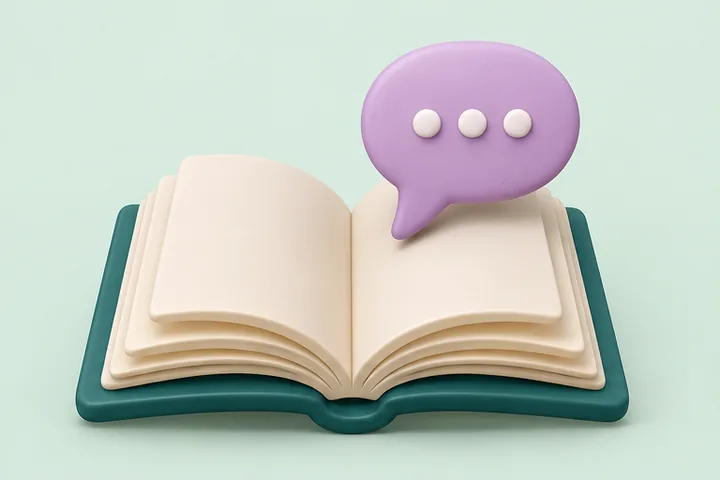
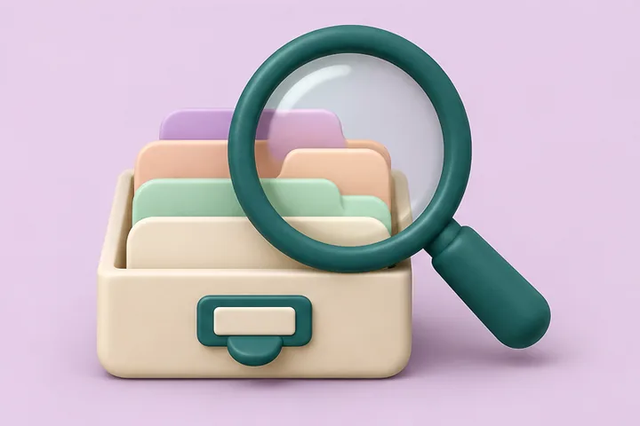

Cuidar também é saber se comunicar.
Consulte termos de saúde e explore recursos para uma comunicação mais acessível no atendimento.

Como podemos ajudar você?
-

Quero aprender
Conheça conceitos iniciais de Libras, cultura surda e comunicação acessível.
-
Preparar atendimento
Explore orientações para acolher e se comunicar com pessoas surdas.
-

Consultar termo
Encontre definições de termos usados no atendimento em saúde.
-
Assistir vídeos
Acesse a biblioteca de vídeos educativos do projeto.